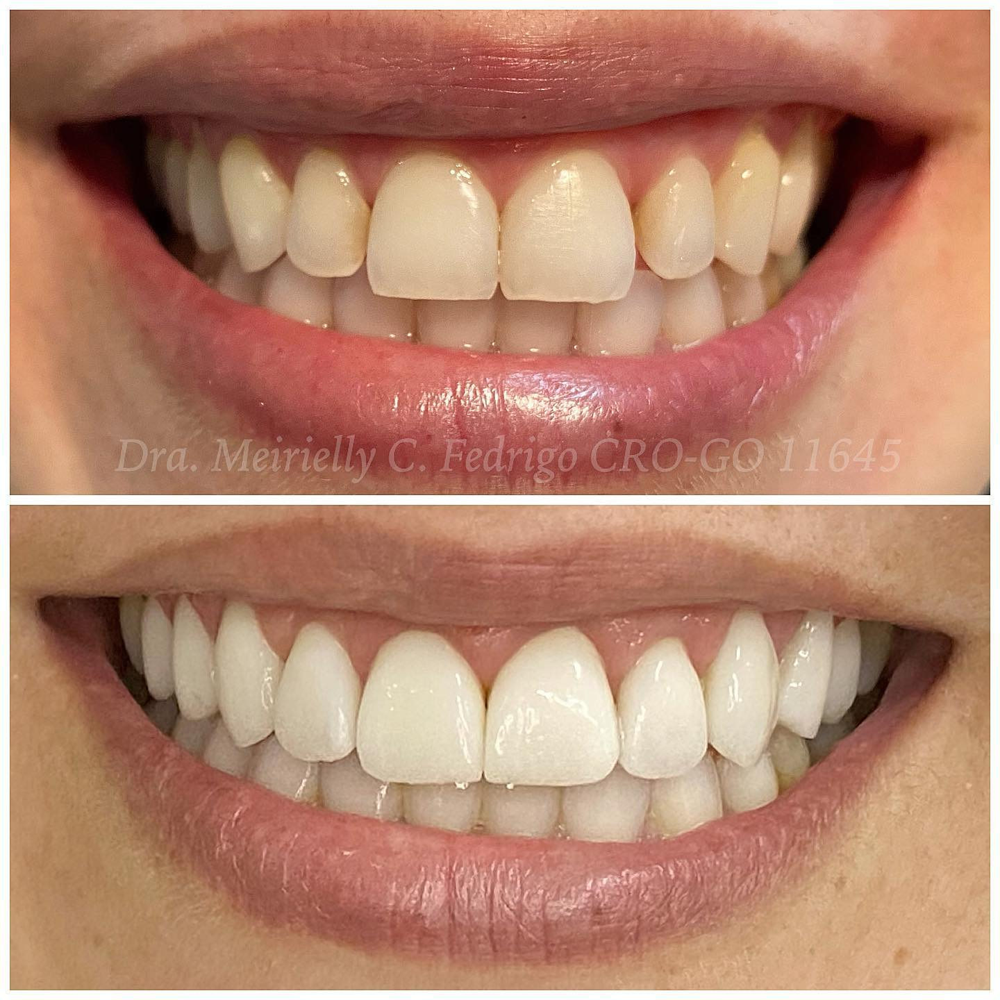
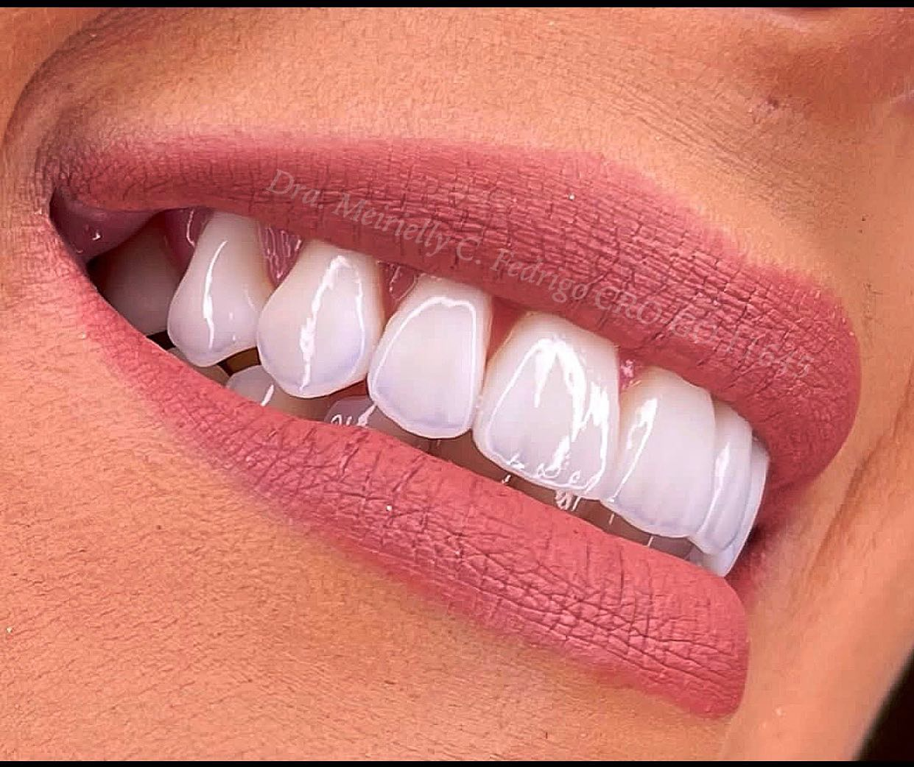

#1 Maior Engajamento
593 ❤️
curtidas · 20 comentários
Resultado de planejamento + técnica + capricho — Clareamento + Laminados Cerâmicos
Cirurgiã Dentista · CRO-GO 11645 · Itumbiara-GO
Score de Saúde Digital
Regular — Presença em Construção
Diagnóstico realizado em 31 de maio de 2026 · @drameiriellyfedrigo · 4.267 seguidores
Sumário Executivo
A Dra. Meirielly construiu algo raro: uma comunidade Instagram que genuinamente a ama. Com 4,78% de engajamento médio — mais do que o dobro do benchmark de 3% para contas do seu porte — seus seguidores não apenas assistem, eles participam ativamente. Curtidas, comentários, elogios espontâneos. Essa é a base de uma presença digital de alto valor.
Mas toda essa energia existe em uma bolha. Cem por cento de sua presença digital está concentrada em uma única plataforma. Quem já a conhece, a encontra facilmente. Quem ainda não a conhece — e busca por "dentista em Itumbiara" no Google — simplesmente não a encontra. Não há ficha no Google Meu Negócio, não há site, não há presença em diretórios médicos. A clínica existe, o talento existe, a fidelidade dos pacientes existe. Falta apenas ampliar o palco.
A grande oportunidade: Com um score de 42/100, cada ponto de melhoria representa ganho real de novos pacientes. Cadastrar o Google Meu Negócio, por exemplo, colocaria a Dra. Meirielly no mapa literalmente — visível para qualquer pessoa em Itumbiara buscando um especialista em implantes ou lentes de contato. O potencial de crescimento aqui é enorme e as barreiras são baixas.
Pilar 1 — Instagram
Comunidade fiel, engajamento acima da média e sentimento extremamente positivo. O ponto crítico é a frequência de publicação — praticamente inativa nos últimos 30 dias.
Engajamento Médio
4,78%
Benchmark: 3% · +59% acima da média
Seguidores
4.267
Média: 191 curtidas · 13 comentários por post
Posts (30 dias)
1
Meta recomendada: 8–12 posts/mês
Sentimento
94,7%
Positivo · 0% comentários negativos
Breakdown do Score Instagram
Análise de Sentimento · 75 comentários analisados
Top 3 Posts por Engajamento
Conteúdos com melhor desempenho na análise de 60 posts

#1 Maior Engajamento
593 ❤️
curtidas · 20 comentários
Resultado de planejamento + técnica + capricho — Clareamento + Laminados Cerâmicos

#2 Maior Engajamento
591 ❤️
curtidas · 24 comentários
Naturalidade 💎 — Lentes de Contato Dentais com preparos minimamente invasivos
#3 Maior Engajamento
479 ❤️
curtidas · 43 comentários
25/10 Dia do Dentista — sou extremamente feliz pela minha profissão ❤️
Insight de formato: Dos 60 posts analisados, 80% são imagens estáticas — apenas 3,3% são vídeos (Reels). O algoritmo do Instagram em 2026 prioriza fortemente Reels na distribuição orgânica. A Dra. Meirielly tem potencial de alcançar 3–5× mais pessoas simplesmente migrando parte do conteúdo para o formato de vídeo curto.
Pilar 2 — Google
Praticamente invisível para novos pacientes. A única presença indexada pelo Google é o perfil do Instagram. Sem Google Meu Negócio, sem presença em "dentista Itumbiara" — a principal porta de entrada de pacientes passivos está fechada.
Resultados das Buscas
"Meirielly Fedrigo dentista" → 1ª posição
Quando buscada pelo nome, aparece imediatamente — via Instagram. Quem já a conhece a encontra sem dificuldade.
"Dentista em Itumbiara" → Não aparece
Pesquisa com intenção de compra — quando um novo paciente busca um dentista na cidade, ela é invisível. Concorrentes com GMB ocupam o Maps Pack.
Google Meu Negócio → Não cadastrado
Zero avaliações, sem endereço no Maps, sem horário de funcionamento. Ferramenta gratuita que poderia triplicar sua visibilidade local.
Doctoralia / BoaConsulta → Não cadastrada
Ausente nos principais diretórios de saúde. 18 dentistas em Itumbiara estão listados — ela não está.
Score Google · Breakdown
Potencial imediato: Cadastrar o GMB hoje pode adicionar +15 pontos ao score — levando de 42 para 57/100 (Grau C+) sem nenhum investimento financeiro.
Pilar 3 — Website
A Dra. Meirielly não possui site próprio. O consultório existe somente enquanto o Instagram existir e enquanto o algoritmo permitir. Um site é o único ativo digital 100% sob seu controle — e funciona 24h por dia, inclusive para o Google.
Site próprio
✗
Não encontrado
Ranking SEO
✗
Não indexado
Performance
—
N/A
Por que um site importa em 2026: O Instagram pode mudar o algoritmo, reduzir o alcance ou até ser descontinuado. Um site próprio é imune a isso. Além de SEO, permite: agendamento online 24h, página de tratamentos com conteúdo educativo, Google Analytics para entender o comportamento dos visitantes, e um ponto de contato profissional independente das redes sociais.
Diagnóstico Completo
Engajamento médio acima de 3% 4,78%
Excelente. Mais do que o dobro do benchmark para contas de 4K seguidores.
Sentimento dos comentários predominantemente positivo
94,7% positivo em 75 comentários analisados. Audiência extremamente fiel.
Sem reclamações públicas sem resposta
Nenhuma pergunta ou reclamação identificada nos posts mais comentados.
Frequência de publicação adequada 1 post/30 dias
Praticamente inativa no último mês. Meta: 8–12 posts + 3 Reels por mês.
Uso de Reels/vídeo curto 3,3% dos posts
O formato com maior alcance orgânico é quase inexistente no perfil.
Bio com link de agendamento claro
A bio menciona WhatsApp mas não tem link clicável de wa.me. Barreira de conversão.
Aparece ao buscar pelo nome
Instagram aparece na 1ª posição quando buscado o nome completo.
Visível em "dentista em Itumbiara"
Ausente nos resultados. Concorrentes com GMB dominam o Maps Pack de 3 posições.
Google Meu Negócio cadastrado
Ficha inexistente. Ferramenta gratuita com maior impacto em visibilidade local.
Presente em diretórios de saúde (Doctoralia, BoaConsulta)
Ausente em todos os diretórios verificados. 18 dentistas de Itumbiara estão listados.
Website
Possui site próprio
Nenhum site encontrado. Dependência 100% do Instagram para presença digital.
Agendamento online disponível
Sem sistema de agendamento fora do WhatsApp manual. Perda de conversões fora do horário comercial.
Próximos Passos
Ordenadas por impacto no score e facilidade de execução.
Criar e verificar a ficha no Google Maps com endereço, telefone, horários e fotos do consultório. Passará a aparecer para quem busca "dentista em Itumbiara".
↑ +15 pts no score · Visível para novos pacientes em <7 dias
Voltar a publicar 3–4x por semana com mix de conteúdo clínico + pessoal. Incluir pelo menos 1 Reel por semana para recuperar alcance orgânico.
↑ +6 pts no score · Dobra o alcance em 30 dias
Site com página de especialidades, galeria de resultados, depoimentos e botão de WhatsApp. Indexável no Google e funcionando 24h.
↑ +25 pts no score · Alcance de busca orgânica
Criar perfis nos principais diretórios de saúde. São gratuitos e aparecem nas primeiras posições do Google para buscas de especialidade.
↑ Visibilidade extra em buscas de especialidade
Substituir o número de texto na bio por um link wa.me direto. Reduz a fricção no caminho do seguidor ao agendamento — conversão imediata.
↑ Aumento estimado de 20–30% nas conversões via Instagram
Projeção de Score após ações 1 + 2 + 3
42
Score atual · Grau C
83
Score projetado · Grau B
Com GMB cadastrado (+15), frequência de posts normalizada (+6) e site criado (+20 pts de impacto imediato), o score saltaria para 83/100 — de Regular para Bom, com visibilidade real para novos pacientes.
Próximo Passo
A Digital AI implementa cada uma dessas ações — GMB, site, automação de presença digital — com tecnologia de IA e entrega mensurada. Sem enrolação, com resultado.
Falar com a Digital AIdigital-ai.tech · Itumbiara-GO